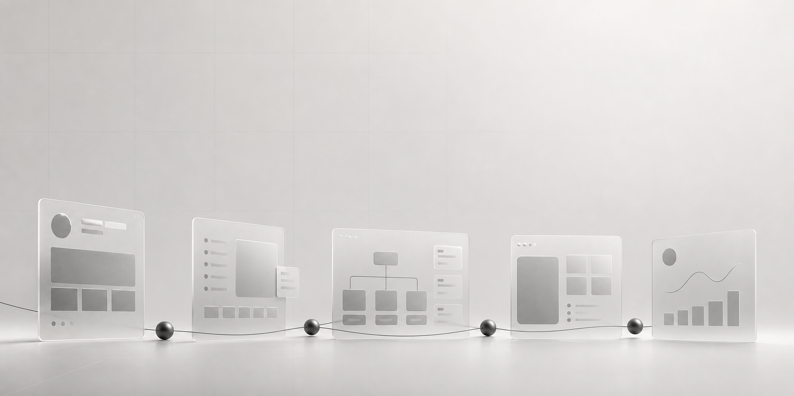

问题
保险服务流程长、信息密度高，用户需要在投保、保单与健康服务之间快速理解下一步操作。
过程
根据客户需求与产品研讨，完成 iOS 和 Android 端 UI 设计，平衡易用性与视觉精致度， 并持续优化高保真界面与用户体验。
结果
输出结构更清晰的移动端保险服务界面，让投保、保单服务和健康管理形成更连贯的产品体验。
- Research
- Prototype
- Visual Design
- Spec
- Delivery
Selected Work
每个项目都以设计负责人关心的方式呈现：面对什么问题，如何推进过程，最终形成什么结果。
保险服务流程长、信息密度高，用户需要在投保、保单与健康服务之间快速理解下一步操作。
根据客户需求与产品研讨，完成 iOS 和 Android 端 UI 设计，平衡易用性与视觉精致度， 并持续优化高保真界面与用户体验。
输出结构更清晰的移动端保险服务界面，让投保、保单服务和健康管理形成更连贯的产品体验。

Insurance App
将传统保险服务转向互联网产品体验，基于交互原型制定视觉风格、样式与高保真界面。
Community App
面向 90 后、00 后漫画社区用户，在原型基础上完成移动端界面、交互层与 Icon 设计。
Web / Brand
覆盖 PC 官网、活动物料、公众号视觉、DM 单页、海报与画册，支持品牌传播和运营推广。
Experience
美术设计师 · 互联网服务业
参与产品前期用户研究和趋势分析，负责官网、终端界面、H5 创意、移动端 UI 与视觉规范输出， 并协同 PM 与开发推进界面落地。
平面设计师 · 广告 / 策划 / 传媒服务业
负责标识系统、画册、宣传资料、展示用品、网站与社交媒体视觉支持， 配合线下和线上推广活动完成品牌传播设计。
Toolkit / Education
Sketch, Axure, PXCook
Photoshop, Illustrator, After Effects, C4D
XMind
北京吉利大学 · 艺术设计 · 本科